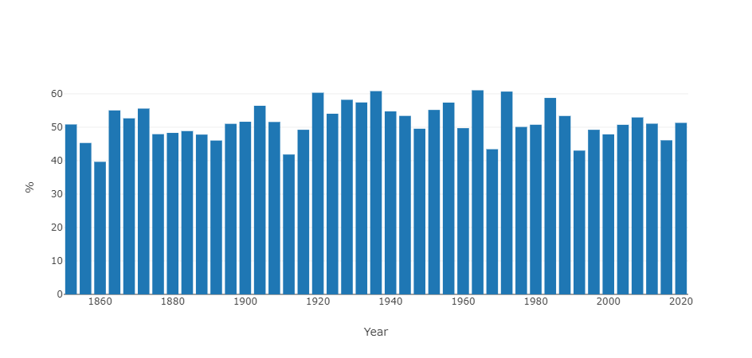
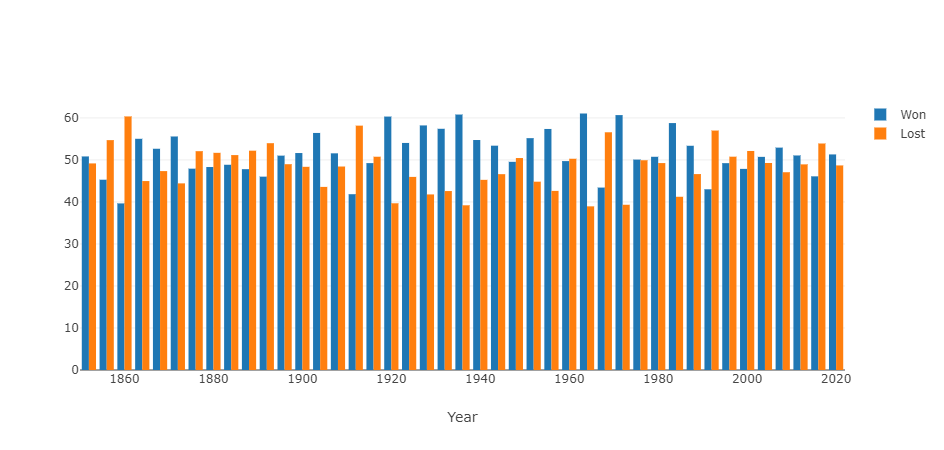
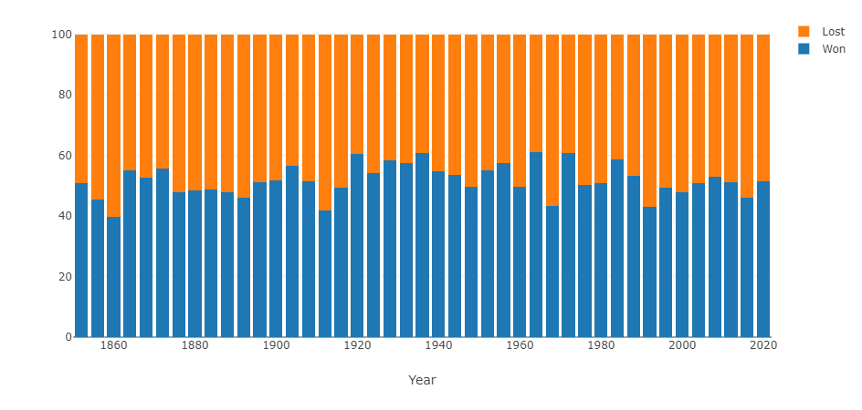
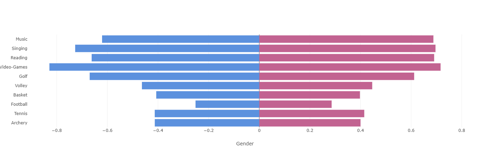
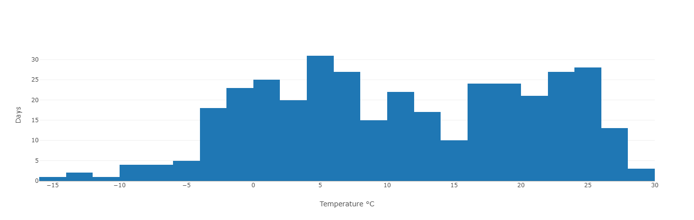
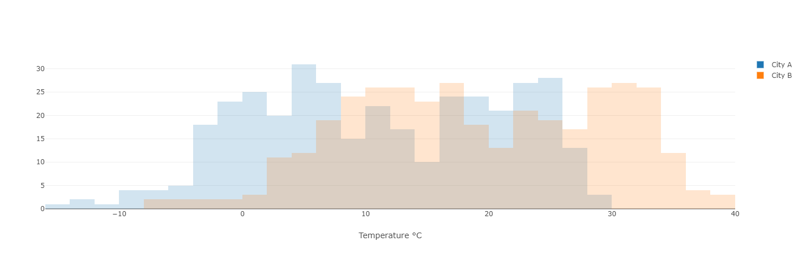

Bar
Bar charts¶
Bar charts can be handy when you need to compare data points next to one another and look at a global change over time.
Simple bar chart¶
Here is an example of how to use bar charts in an application.
You want to display the popular vote percentage for every presidential election in the US since 1852 (source Wikipedia).
The Python code will look like this:
percentages=[(1852,50.83), (1856,45.29), ..., (2016,46.09), (2020,51.31)]
data = pd.DataFrame(percentages, columns= ["Year", "%"])
A Pandas DataFrame is built from a list of tuples that hold the election year and the percentage of votes the winner has received globally.
The definition of a bar chart that represents this data will look like this:
Page content
<|{data}|chart|type=bar|x=Year|y=%|>
<taipy:chart type="bar" x="Year" y="%">{data}</taipy:chart>
All we did is set the type property to "bar", and the following chart is displayed on the page (the blue color is not related to what party the elected president belongs to - it is just the default color that Plotly has picked up):

Faint bars
Plotly gives bars a low opacity unless they are selected. If you want to override that behavior and force a higher opacity, you can use the following rule in your CSS style sheet:
.cartesianlayer .plot path {
opacity: 0.8 !important;
}
Multiple data sets¶
Say you want to display the score of the winning side next to the score of the losing side.
Starting with the same data set as above, you can write:
percentages=[(1852,50.83), (1856,45.29), ..., (2016,46.09), (2020,51.31)]
data = pd.DataFrame(percentages, columns= ["Year", "Won"])
data["Lost"] = [100-t[1] for t in percentages]
We add a new column to the DataFrame data, which is the complement to 100 of percentages.
To represent it, we will change the definition of the cart control:
Page content
<|{data}|chart|type=bar|x=Year|y[1]=Won|y[2]=Lost|>
<taipy:chart type="bar" x="Year" y[1]="Won" y[2]="Lost">{data}</taipy:chart>
Here is how this new data set is represented:

Stacked bar chart¶
When different data sets are available from the same set of x values, it may be relevant to stack those values in the same bar.
We are reusing the same DataFrame as in the example above.
To indicate that we want a stacked representation, you must create a layout dictionary:
layout={ "barmode": "stack" }
And use this dictionary in the definition of the chart:
Page content
<|{data}|chart|type=bar|x=Year|y[1]=Won|y[2]=Lost|layout={layout}|>
<taipy:chart type="bar" x="Year" y[1]="Won" y[2]="Lost" layout="{layout}">{data}</taipy:chart>
Here is the resulting image:

And each bar adds up to 100, as expected.
Facing bar charts¶
It's sometimes helpful to display two bar charts facing each other, so comparing data is more manageable.
This example creates a chart that shows the ratio of men and women practicing certain activities as hobbies. We want a vertical scale representing the different hobbies and the proportion of individuals enjoying that activity on each side of a common vertical axis, represented as two horizontal bars facing each other.
We have a DataFrame that holds the information we want to represent:
data = pd.DataFrame({
"Hobbies": [
"Archery", "Tennis", "Football", "Basket", "Volley",
"Golf", "Video-Games", "Reading", "Singing", "Music" ],
"Female": [0.4, ..., 0.63],
"Male": [-0.39, ..., -0.6]
})
The chart control definition for this example is slightly more complex than for the previous examples. It is clearer to store the properties and their values in a dictionary, which we will later use as the value for the properties control property.
Here is our property dictionary:
properties = {
"y": "Hobbies",
"x[1]": "Female",
"color[1]": "#c26391",
"orientation[1]": "h",
"x[2]": "Male",
"color[2]": "#5c91de",
"orientation[2]": "h",
"layout": {
"barmode": "overlay",
"xaxis": { "title": "Gender" },
"showlegend": False
}
}
Also, note that the layout property is set as well: We indicate in its barmode property that the two charts should be displayed next to each other, and we hide the legend using the showlegend property.
Now let's use this dictionary in the definition of the chart:
Page content
<|{data}|chart|type=bar|properties={properties}|>
<taipy:chart type="bar" properties="{properties}">{data}</taipy:chart>
Here is the result:

Histogram¶
A histogram shows how often different values occur in a data set. Histograms are used to see the shape of the data's distribution.
This example will show the histogram of temperature samples taken every day in a given location.
A DataFrame column holds a temperature for each day:
data = pd.DataFrame({ "Days" : [-11.3,-6,-0.1,...,-8.1,1.6,-4.8] })
And a layout dictionary decorates the x axis:
layout = { "xaxis" : { "title": "Temperature °C"} }
The chart control definition uses the "histogram" value for the type property:
Page content
<|{data}|chart|type=histogram|y[1]=Days|layout={layout}|>
<taipy:chart type="histogram" y[1]="Days" layout="{layout}">{data}</taipy:chart>
Here is how the histogram is displayed:

Comparing histograms¶
You want to compare two histograms next to each other, sharing the same x axis.
Imagine you have a daily sample of the temperatures in two cities. Showing their histogram next to each other can immediately help understand the difference between the two data sets.
In this situation, you need to split your data sets into two distinct data frames, one for each city. Each DataFrame contains a column holding a temperature for each day. The two DataFrames are stored in an array:
data = [
pd.DataFrame({ "City A" : [-11.3,-6,-0.1,...,-8.1,1.6,-4.8]}),
pd.DataFrame({ "City B" : [-7.1,5.1,11.8,...,3.4,13.1,-0.5]})
]
Besides the label of the x axis, the layout dictionary must indicate that both data sets must share the same x axis:
layout = {
"barmode": "overlay",
"xaxis" : { "title": "Temperature °C"}
}
The chart control definition is the following:
Page content
<|{data}|chart|type=histogram|y[1]=0/City A|y[2]=1/City B|layout={layout}|>
<taipy:chart type="histogram" y[1]="0/City A" y[2]="1/City B" layout="{layout}">{data}</taipy:chart>
Note how you indicate which data set must be used in the chart: When dealing with arrays of DataFrames, the syntax is 'index/column' where index indicates the index in the data array where the DataFrame holding the column column is located.
The resulting display will be:
